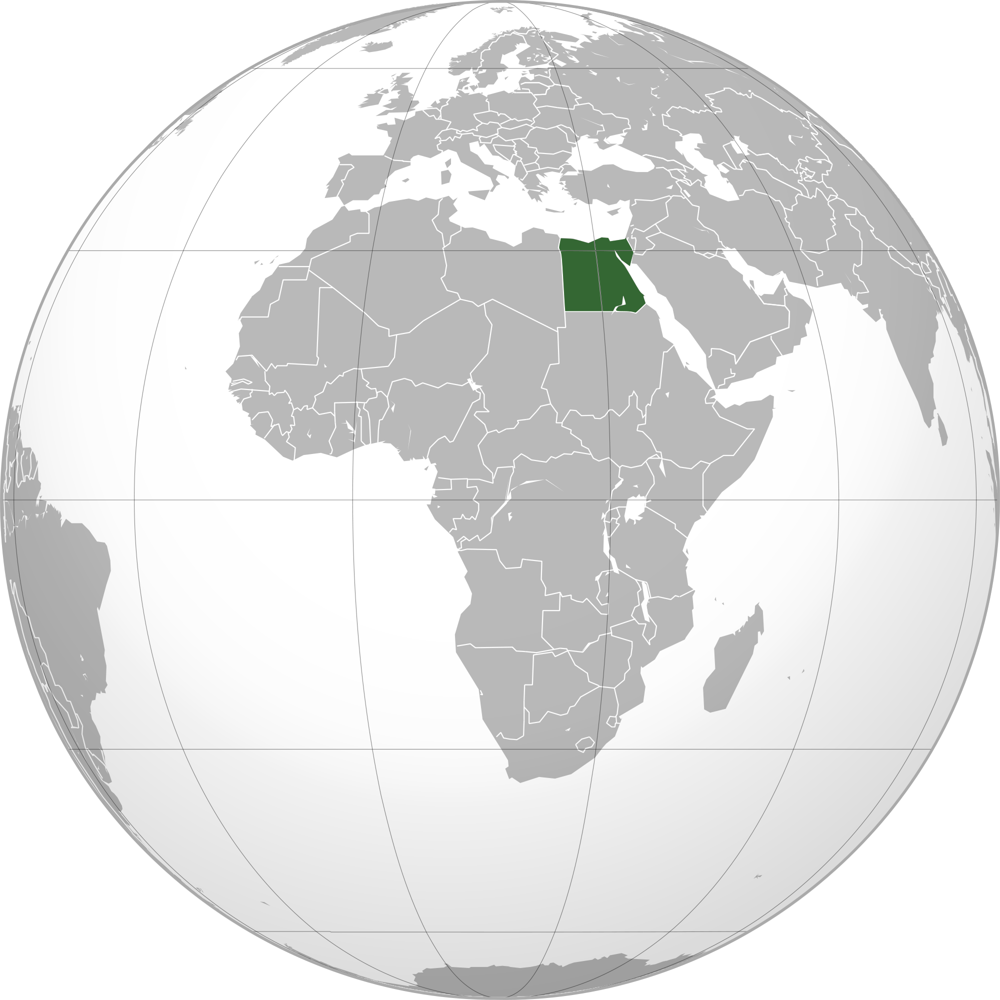
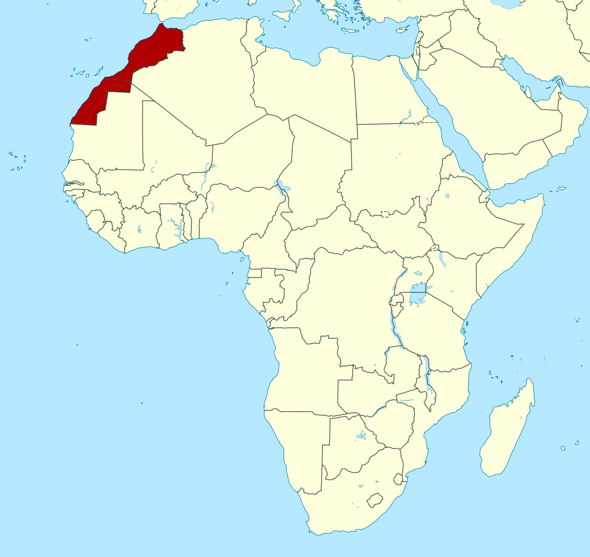
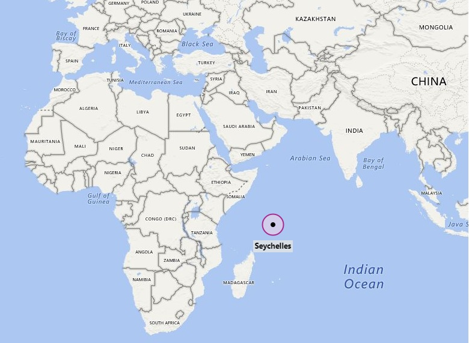

Best Places to Visit in Africa
Egypt

Egypt is a country in the northeast of Africa bordering the Middle East is a popular tourist destination for many people, with its rich culture and mesmerising history
it is a place that you must visit in your lifetime. It is home to many great wonders of the world from the Great Pyramids of Giza and the Nile river and the Great Sphinx.
Egypt also has a delicious cuisine from kofta to kebabs
Morocco

Another great place to visit in Northern Africa is the country of Morocco. Morocco is a long country along the west coast of northern africa stretching from Spain down to
Mauritania. Morocco is home to many beaches, deserts and mountains. In the cities there are many markets where you can shop for colouful textiles, spices and intricate handicrafts
You can also see the Sahara desert in Morocco as well as the Blue Alleyways of Chefchaouen
Seychelles

Seychelles is a set of islands off the coast of Somalia and Kenya. They are home to some of the most beautiful islands possibly in the world with pristine beaches
and sunny skies it is a great holiday spot for people who love the clear waters and pretty islands. You can visit the Curieuse island home to many Giant tortoises
or you can swim and snorkel at the Beau Vallon Beach.